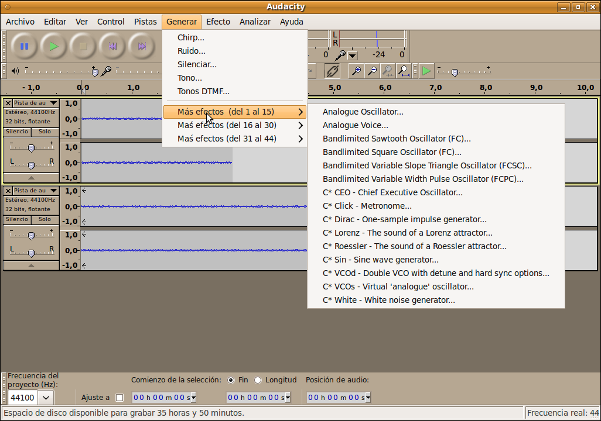
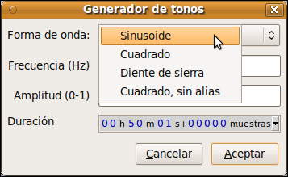

Edición de Audio y video
1.1.6. Generar
El
audio creado, utilizando las funciones de este menú, reemplazará
cualquier selección, de lo contrario será insertado en la pista actual
o en una nueva, desplazando las partes más adelantes de la pista hacia
arriba.

- Chirp: nos permite realizar un desvanecimiento o aumento de la señal, aplicando unas formas de onda determinadas, frecuencias diferentes y una amplitud de onda deseada durante un tiempo establecido. En algunas versiones ya disponen de interpolación.
- Ruido: Inserta muestreos aleatorios de audio que generar un sonido peculiar, simulando ruidos.
- Tono: Nos permite crear diferentes tonalidades tipo sinusiodal, cuadrado, diente de sierra,e etc. a una frecuencia dada, con una amplitud deseada y una duración establecida.
- Silenciar: genera silencio en la zona seleccionada de la pista.
- Más Efectos: Dispone de sonidos para utilizar en nuestras pistas.
Jo.R.C.A. 2004 - 2011

Edición de Audio y Video con Software Libre by José Ramón Cerdeira Alonso is licensed under a Creative Commons Reconocimiento-No comercial-Compartir bajo la misma licencia 3.0 España License